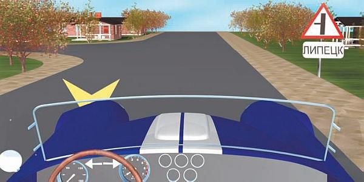
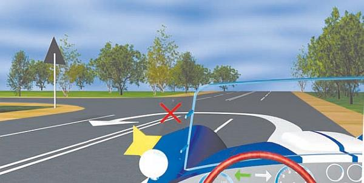

В результате каких нарушений Правил дорожного движения случаются аварии.
Ранее мы уже говорили о том, что одной из наиболее распространенных причин возникновения дорожно-транспортных происшествий является нарушение водителями Правил дорожного движения. Постараемся проанализировать, какие именно нарушения чаще всего становятся причинами дорожных аварий.
Около 38 % всех дорожно-транспортных происшествий происходит по причине нарушения водителями транспортных средств правил обгона или встречного разъезда. Например, не все водители соблюдают требования пункта 1.1 Правил дорожного движения, текст которого приведен ниже.
Прежде чем начать обгон, водитель обязан убедиться в том, что:
> полоса движения, на которую он намерен выехать, свободна на достаточном для обгона расстоянии и этим маневром он не создаст помех встречным и движущимся по этой полосе транспортным средствам;
> следующее позади по той же полосе транспортное средство не начало обгон, а транспортное средство, движущееся впереди, не подало сигнал об обгоне, повороте (перестроении) налево;
> по завершении обгона он сможет, не создавая помех обгоняемому транспортному средству, вернуться на ранее занимаемую полосу.
Часто водители приступают к выполнению обгона, даже не удосужившись посмотреть в зеркало заднего вида, не говоря о том, чтобы оглянуться. Это становится причиной попутных столкновений. Однако к гораздо более серьезным последствиям приводят лобовые столкновения, происходящие из-за того, что водитель пошел на непродуманный и авантюрный обгон и не убедился в том, хватит ли ему на полосе встречного движения места для завершения маневра.
Примерно пятая часть дорожно-транспортных происшествий случается по причине нарушения скоростного режима, а именно превышения максимально разрешенной скорости (рис. 7.14). Водители не справляются с управлением при движении на высокой скорости, и автомобиль выносит в кювет, на полосу встречного движения, пешеходный переход, придорожный столб, тротуар с пешеходами и т. д. Особенно опасно превышение скорости при движении по скользкой дороге либо в условиях недостаточной видимости.

Рис. 7.14. В населенном пункте можно ехать не быстрее 60 километров в час
Около 12 % всех дорожно-транспортных происшествий случается по вине водителей, находящихся в состоянии алкогольного, наркотического либо токсикологического опьянения. В подобных случаях, как правило, присутствуют как минимум два нарушения Правил дорожного движения: управление автомобилем в состоянии опьянения, а также либо превышение скорости, либо засыпание за рулем, либо нарушение правил обгона, то есть то, что явилось следствием состояния опьянения и стало непосредственной причиной дорожно-транспортного происшествия.
Нарушение правил маневрирования является причиной 8 % всех дорожных аварий. Значительная часть таких ДТП случается при смене полосы движения (то есть при перестроении). В данном случае сталкиваются транспортные средства попутных направлений, поэтому к серьезным травмам или человеческим жертвам они приводят редко. Многие водители забывают о существовании «мертвой зоны» и в момент перестроения сталкиваются с находящимся в ней транспортным средством (напомним, что не стоит полностью доверять зеркалам заднего вида, поэтому не ленитесь оглянуться и посмотреть, что происходит в непосредственной близости от машины). Часто случаются аварии из-за того, что кто-либо из водителей совершает разворот не из крайней левой полосы (рис. 7.15).

Рис. 7.15. Такой разворот чреват попутным столкновением
Около 6 % всех дорожно-транспортных происшествий является результатом нарушения правил проезда перекрестков (имеются в виду как регулируемые, так и нерегулируемые перекрестки). Часто водители забывают уступить дорогу транспортным средствам, движущимся по главной дороге, либо пытаются ехать в запрещенном направлении (например, по полосе предписано ехать прямо, а водитель пытается повернуть налево). Немало аварий на перекрестках случается из-за нарушения правил выполнения левого поворота (водитель, поворачивающий налево, не пропускает транспортные средства, движущиеся в противоположном направлении).
Из-за нарушения правил проезда железнодорожных переездов происходит около 5 % аварий. Как мы уже отмечали выше, столкновение автомобиля с железнодорожным составом является одним из самых серьезных дорожно-транспортных происшествий, редко обходящихся без гибели людей. По вопиющей беспечности водители игнорируют запрещающий сигнал светофора на переездах, не оборудованных шлагбаумом. Некоторые нетерпеливые водители умудряются объехать шлагбаум и пытаются проскочить перед самым поездом. Подобные попытки часто заканчиваются трагически. Следует также отметить, что нередки случаи, когда автомобиль глохнет прямо на рельсах, и, если в это время поблизости находится поезд, водитель и пассажиры не успевают вовремя выйти из машины.
Около 4 % ДТП случается по причине нарушения правил перевозки пассажиров. Чаще всего водители пренебрегают пунктом 22.8 Правил дорожного движения, текст которого приведен ниже.
Запрещается перевозить людей:
> вне кабины автомобиля (кроме случаев перевозки людей в кузове грузового автомобиля с бортовой платформой или в кузове-фургоне), трактора, других самоходных машин, на грузовом прицепе, в прицепе-даче, в кузове грузового мотоцикла и вне предусмотренных конструкцией мотоцикла мест для сидения;
> сверх количества, предусмотренного технической характеристикой транспортного средства.
Например, нередки случаи выпадения людей из не оборудованного должным образом кузова грузового автомобиля. Иногда в салон легковушки набивается столько людей, что водитель совершенно не имеет обзора ни сзади автомобиля, ни с его правой стороны. Не говоря о том, что многие наши соотечественники очень не любят пользоваться ремнями безопасности.
Несоблюдение дистанции между движущимися транспортными средствами приводит к возникновению 3 % дорожно-транспортных происшествий. Здесь имеет место нарушение пункта 9.10 Правил дорожного движения, который гласит: «Водитель должен соблюдать такую дистанцию до движущегося впереди транспортного средства, которая позволила бы избежать столкновения, а также необходимый боковой интервал, обеспечивающий безопасность движения».
Например, водитель собирается пойти на обгон, убеждается в том, что сзади и по сторонам нет помех и можно приступать к выполнению маневра, набирает скорость, приготовившись перестроиться на соседнюю полосу движения. Но перед самым его перестроением автомобиль, который едет спереди, резко начинает тормозить (вероятнее всего, по причине внезапного появления препятствия), водитель перестраивающегося автомобиля не успевает должным образом на это отреагировать, в результате чего происходит столкновение. Вкратце суть допущенной ошибки можно сформулировать так: водитель, собираясь пойти на обгон, оценил дорожную обстановку сзади и по сторонам, но совершенно перестал контролировать ситуацию впереди. Причем в данном случае ему нужно было обращать внимание не только на поведение автомобиля, движущегося впереди, но и стараться увидеть то, что происходит на проезжей части перед ним.
Иногда водители просто забывают о необходимости соблюдать дистанцию, что также приводит к столкновениям. Особое значение соблюдение безопасной дистанции приобретает при движении по скользкой дороге и в условиях недостаточной видимости.
Из-за неподчинения сигналам светофора случается около 2 % дорожно-транспортных происшествий. Здесь можно говорить как о простой невнимательности (водитель не заметил сигнала светофора), так и о преднамеренном нарушении Правил дорожного движения. Например, нередки случаи, когда водитель пытается проехать на запрещающий сигнал светофора и на перекрестке сталкивается с автомобилем, движущимся на зеленый свет.
Однако игнорировать требования светофора могут не только водители, но и пешеходы. Более того, последние делают это намного чаще и бесцеремоннее, причем последствия такого нарушения ПДД для пешеходов являются более тяжелыми, чем для водителей!
Переутомление водителей и засыпание за рулем является причиной около 2 % дорожных аварий. (О том, почему нельзя управлять транспортным средством в состоянии утомления или переутомления и какими опасными последствиями это чревато, мы говорили выше, в разделе «Чем опасно переутомление».)